F
FindSport
Авторы: команда FindSport (PM, QA, Java Developer)
Период: 12 октября – 15 ноября 2026 (5 недель)
Ветка: feature_task_prototype_week5 · репозиторий GitHub
Отчёт по проекту FindSport
Веб-платформа поиска спортивных мероприятий на территории Республики Беларусь.
Отчёт охватывает пять недель разработки: от каркаса проекта и модели данных до публичного
каталога с поиском, фильтрами и картой.
Выполнено задач по проекту
100 %
95 из 95 задач календарного плана недель 1–5
Протестировано задач
83
автотеста, все проходят (61 интеграционный на PostgreSQL)
Закрыто за 5 недель
95
S: 26 · M: 59 · L: 10 — в среднем 19 задач в неделю
Выполненные задачи по неделям
| Дата |
Состав выполненных задач |
S (XS/S/Low) |
M (M/Mid) |
L (L/High) |
Всего |
| 18 окт |
8S 7M 1L — проект, роли, план, тест-план |
8 | 7 | 1 | 16 |
| 25 окт |
4S 11M 2L — модель данных, миграции, API |
4 | 11 | 2 | 17 |
| 1 нояб |
6S 13M 1L — регистрация, вход, роли и права |
6 | 13 | 1 | 20 |
| 8 нояб |
4S 14M 3L — поставщики, мероприятия, модерация |
4 | 14 | 3 | 21 |
| 15 нояб |
4S 14M 3L — каталог, поиск, фильтры, карта |
4 | 14 | 3 | 21 |
| Итого |
За весь отчётный период |
26 | 59 | 10 | 95 |
Динамика выполнения задач (S / M / L)
Неделя 1
16
Неделя 2
17
Неделя 3
20
Неделя 4
21
Неделя 5
21
S (XS/S/Low) — мелкие задачи
M (M/Mid) — средние
L (L/High) — крупные
Краткий итог
- За 5 недель закрыто 95 задач календарного плана (в среднем 19 в неделю): пик пришёлся
на недели 4 и 5 (по 21 задаче) — это кабинет поставщика с модерацией и поисковый каталог с картой.
- Основной объём составили задачи категории M/Mid (59) и мелкие XS/S/Low (26);
крупных задач уровня L/High — 10: модель данных, авторизация с ролями, модерация карточек и поисковый API.
- Реализовано функциональное ядро платформы: модель данных и миграции, регистрация и вход с разграничением прав,
кабинет поставщика с медиа и модерацией, публичный каталог с фильтрами, сортировкой и картой.
- Автоматизация проверок: 83 автотеста (61 интеграционный — на реальном PostgreSQL 17 через Testcontainers),
все проходят; проверка скорости поиска на наборе из 2000 мероприятий дала 42–71 мс при цели ТЗ ≤ 2 с.
- По итогам подготовки скриншотов найдено и исправлено 3 дефекта (счётчики видов спорта, чужие мероприятия
в карточке поставщика, выравнивание панели фильтров).
Что сделано по неделям
Неделя 1
Проектирование и организация работы
12 – 18 октября
- Собран и согласован документ требований: назначение платформы, роли пользователей, функциональные блоки,
ограничения и критерии приёмки.
- Заложен каркас проекта: Maven + Spring Boot,
docker-compose.yml (PostgreSQL 17 и Mailpit),
README.md, .gitignore, пример конфигурации, каталог документации; зафиксированы
правила работы с Git (ветки, pull request, коммит по задаче).
- Распределены роли PM / QA / Java Developer, составлен календарный план на 12 недель и первичный список задач.
- QA: требования к прототипу, первичный тест-план, чек-листы и шаблон дефекта в Jira.
Коммиты: 19bb107, 7985ba8, acccdfc, 1b2a207, 4e0f4e3.
Каркас проекта — 14 файлов, +738 строк.
Неделя 2
Проектирование и реализация модели данных
19 – 25 октября
- Спроектированы таблицы и связи основных сущностей; написаны миграции
V1–V5: словари,
пользователи и поставщики, мероприятия, заявки и модерация, отмена заявок и валюта.
- Создана доменная модель (20+ классов:
Event, Provider, User,
Booking, EventMedia, EventModeration, Region,
Sport, Address), репозитории со спецификациями, сервисы поиска, карточек и снимков.
- Подключён Swagger/OpenAPI по ТЗ, описаны публичные API; собран общий веб-каркас с единой обработкой ошибок.
- Настроены Docker, PostgreSQL и логирование; приложение развёрнуто в тестовой среде.
Коммит: 8e55495 — 106 файлов, +4909 строк.
Неделя 3
Регистрация, вход и права доступа
26 октября – 1 ноября
- Реализованы регистрация с подтверждением e-mail, вход и выход, восстановление доступа; сервисы
RegistrationService, LoginService, TokenService, PasswordRecoveryService.
- Введены пользовательские роли и проверка полномочий, аудит действий безопасности, ограничение частоты публичных форм,
CSRF-cookie flow и единый формат ошибок Problem Details.
- Миграция
V6 (токены и согласия); письма подтверждения и восстановления отправляются через SMTP/Mailpit.
- Сделаны страницы: главная, вход, регистрация, восстановление пароля, подтверждение e-mail, личный кабинет.
Коммит: 7a6b841 — 74 файла, +3490 / −441 строки.
Неделя 4
Поставщики, мероприятия и модерация
2 – 8 ноября
- Кабинет поставщика: профили организаций и тренеров, создание и редактирование карточек мероприятий,
отправка карточки на модерацию.
- Медиа: загрузка фото (jpg 0.1–5 МБ) и документов (docx до 20 МБ), видеоссылки Google Drive,
хранение файлов вне каталогов приложения (
FileStorage).
- Модерация: очередь заявок, сравнение отправленной и опубликованной версий, автоматические проверки,
журнал решений, публикация, отклонение с обязательной причиной и архивирование.
- Миграция
V7 (модерация поставщиков и staging медиа); страницы кабинета и панели модератора.
Коммит: f77f741 — 70 файлов, +3842 / −282 строки.
Неделя 5
Каталог, поиск, фильтры и карта
9 – 15 ноября
GET /api/v1/catalog — единая выдача мероприятий, организаций и тренеров: поиск по наименованию,
описанию, видам спорта, населённым пунктам и адресам — регистронезависимо и по частичному совпадению.- Фильтры (область, город, вид спорта, возраст, цена, даты, формат, свободные места, тип объекта),
сортировки
NEWEST / DATE / PRICE, счётчики в панели фильтров и постраничный вывод.
GET /api/v1/catalog/map — метки по координатам населённого пункта (справочник из 34 НП),
карта на собственном SVG-контуре Беларуси без внешних сервисов; GET /api/v1/home — главная страница
с поиском и ближайшими мероприятиями; публичная карточка поставщика GET /api/v1/providers/{id}.- Миграция
V8 (справочник населённых пунктов и индексы поиска), генератор синтетических данных
(2000 мероприятий / 20 поставщиков), 12 интеграционных проверок поисковой выборки.
Коммиты: 4fe1ee7 (48 файлов, +3273), d472c23 (скриншоты и исправления 3 дефектов).
Технологии, качество и запуск
Стек и инфраструктура
- Java 21, Spring Boot, Spring Security, Spring Data JPA, Bean Validation.
- PostgreSQL 17, Flyway (миграции
V1–V8), Docker Compose (PostgreSQL + Mailpit).
- Swagger / OpenAPI (
/swagger-ui.html), статический фронтенд на HTML/CSS/JS без сборщика.
- JUnit 5, Testcontainers, интеграционные проверки на реальной БД.
Проверки качества
- 83 автотеста: 61 интеграционный (каталог, мероприятия, медиа, профили, авторизация) и 22 модульных — все проходят.
- Отдельный Node-тест сохранения параметров поиска в URL (ТЗ п. 4.7.9).
- Скорость поиска на 2000 мероприятиях: текстовый поиск — 71 мс, фильтры и сортировка — 42 мс при цели ТЗ ≤ 2 с.
- Генератор синтетических данных включается только признаком
findsport.tools.seed.enabled=true.
Запуск
docker compose up -d — PostgreSQL 17 и Mailpit.ADMIN_EMAIL=… ADMIN_PASSWORD=… mvn spring-boot:run.- Интерфейс: главная, каталог, карта, кабинет поставщика, панель модератора, Swagger.
Что осталось за рамками отчётного периода
- Заявки, подтверждение и уведомления — неделя 6.
- Рекомендации, избранное, отзывы — недели 6–7.
- Административные счётчики и настройки — неделя 7.
- Приёмочные испытания и передача в опытную эксплуатацию — недели 8–9.
Источники: история Git (ветка feature_task_prototype_week5), календарный план проекта, ТЗ FindSport, отчёт по неделе 5 documentation/Week5_Search_Catalog_Map.md, папки скриншотов design/screenshots/week5 и design/screenshots/prev_week5.
Неделя 4: поставщики, мероприятия и модерация — интерфейс
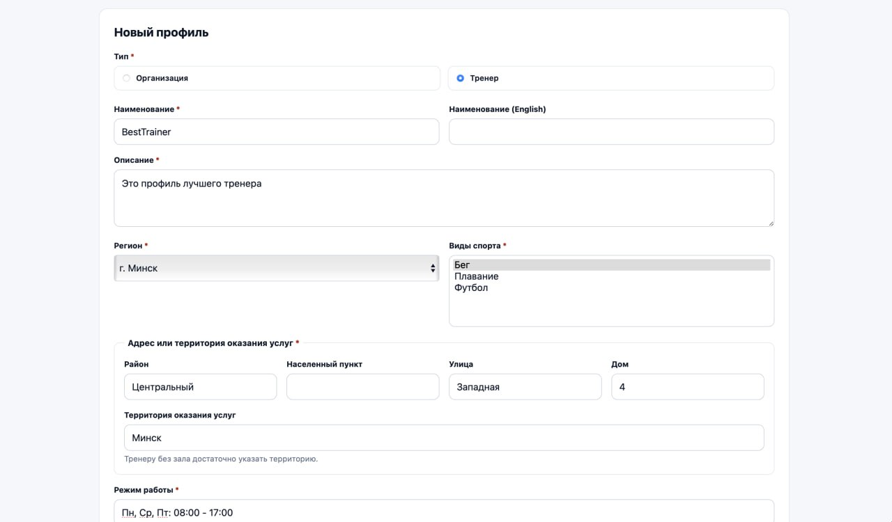
Карточка поставщика. Создание профиля тренера: тип, название, описание, регион,
виды спорта, адрес оказания услуг, режим работы.
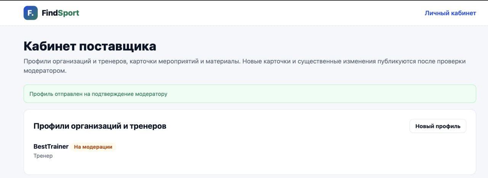
Кабинет поставщика. Профили организаций и тренеров: карточка отправлена
на подтверждение модератору и ждёт решения.
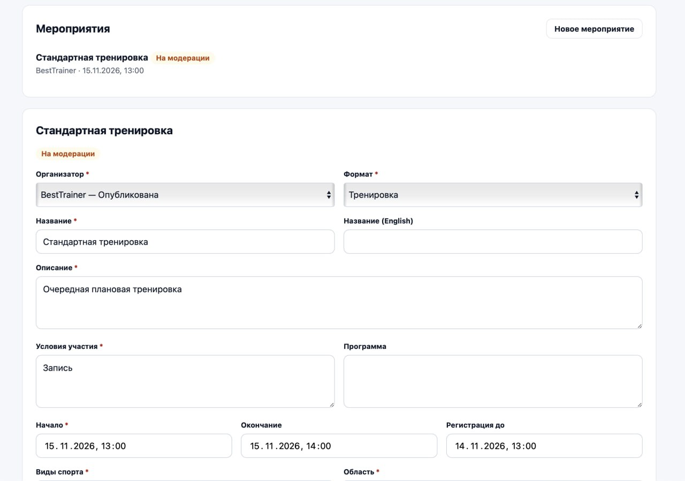
Карточка мероприятия. Черновик в кабинете поставщика: организатор, формат, название,
описание, условия участия, даты, виды спорта и область.
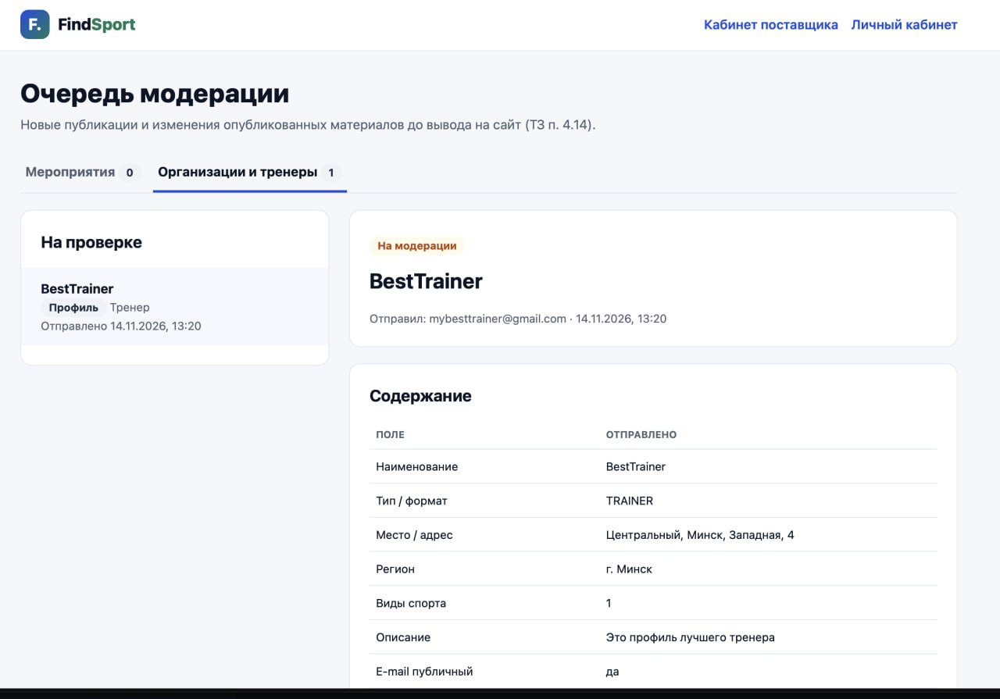
Панель модератора. Очередь заявок в разрезе «Мероприятия» и «Организации и тренеры»:
отправленная версия карточки и состав полей.
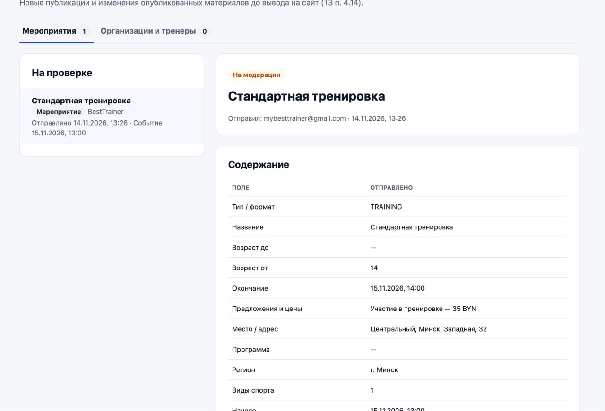
Сравнение версий. Карточка мероприятия на модерации: срок события, возраст, адрес,
уровень подготовки, предложения и цены.
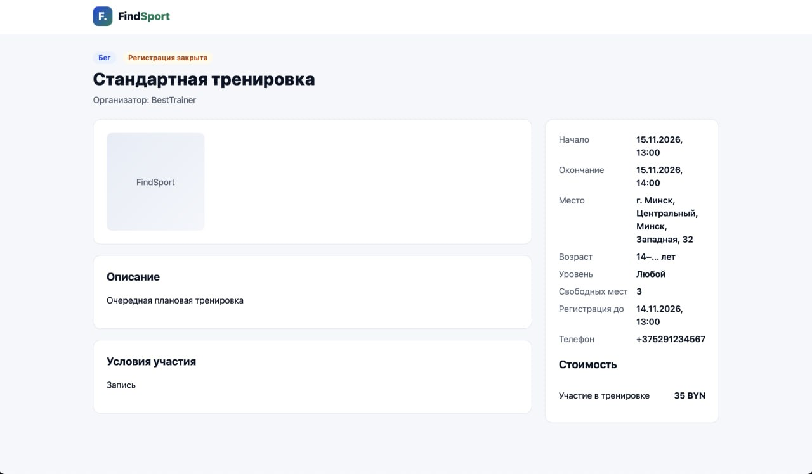
Публичная карточка мероприятия. Вид после модерации: описание, условия участия,
возраст, свободные места, регистрация, стоимость.
Неделя 5: каталог, поиск, фильтры и карта — интерфейс
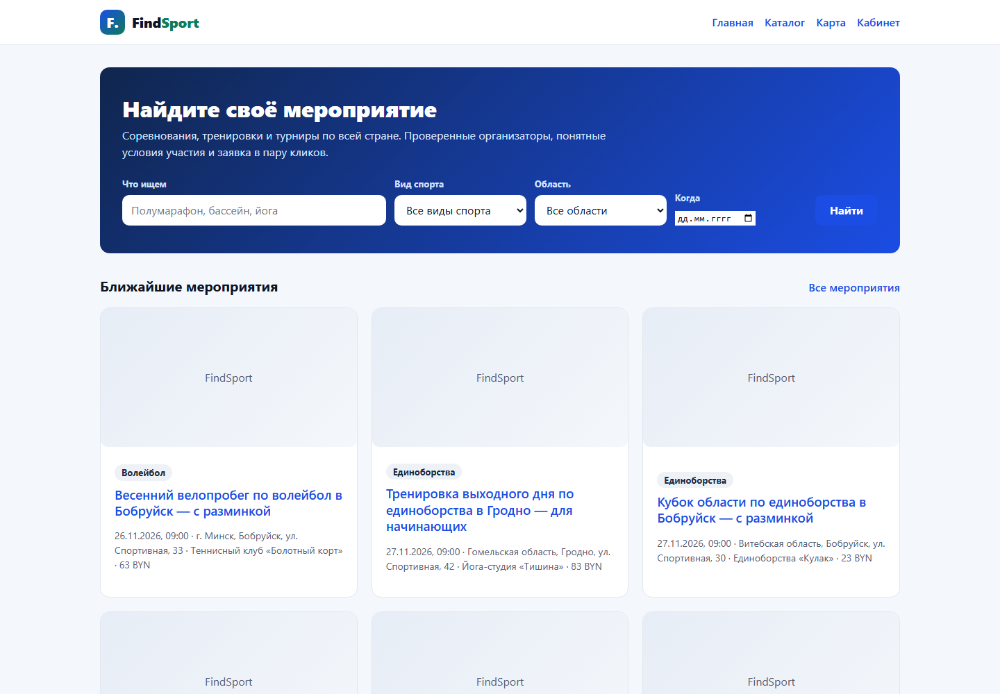
Главная страница. Поиск по тексту, виду спорта, области и дате; ближайшие мероприятия
с указанием места, организатора и стоимости.
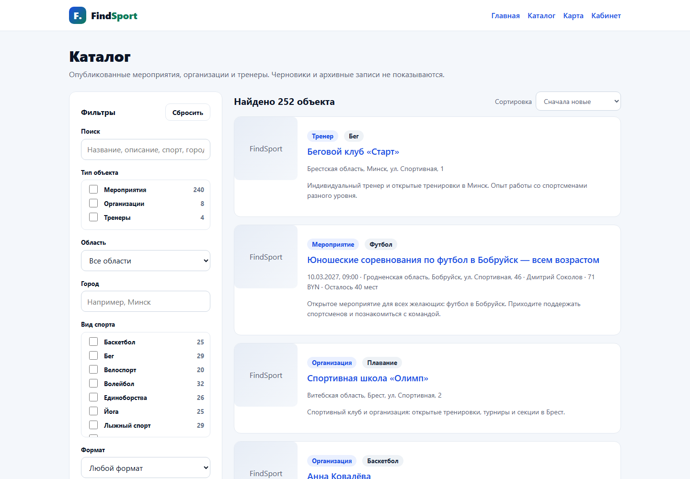
Каталог. Единая выдача мероприятий, организаций и тренеров; панель фильтров со
счётчиками по типам объектов и видам спорта, сортировка.
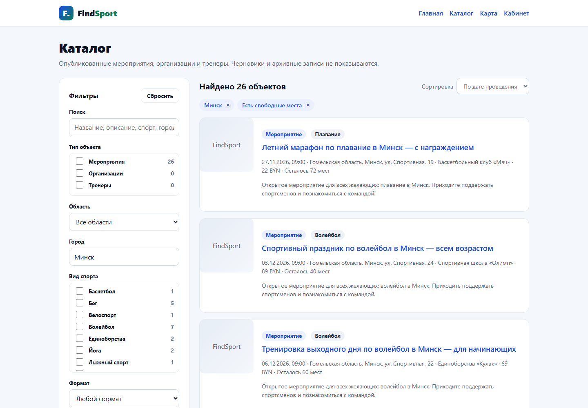
Применённые фильтры. Город, свободные места, формат и цена; фильтры выводятся «плашками»
со снятием по одному, счётчики пересчитаны под выдачу.
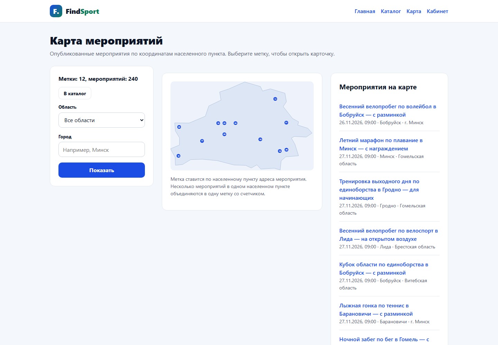
Карта мероприятий. Метки по населённому пункту адреса на собственном контуре Беларуси;
список мероприятий справа, переход по метке открывает карточку.
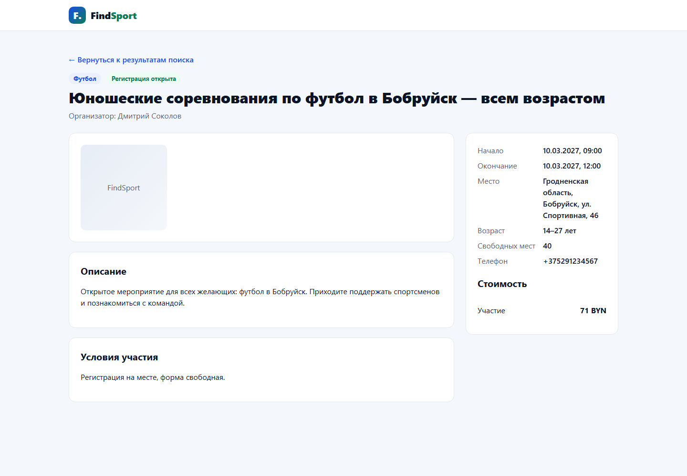
Карточка мероприятия. Полные условия участия и ссылка «вернуться к результатам поиска»
с сохранёнными фильтрами (ТЗ п. 4.3.5).
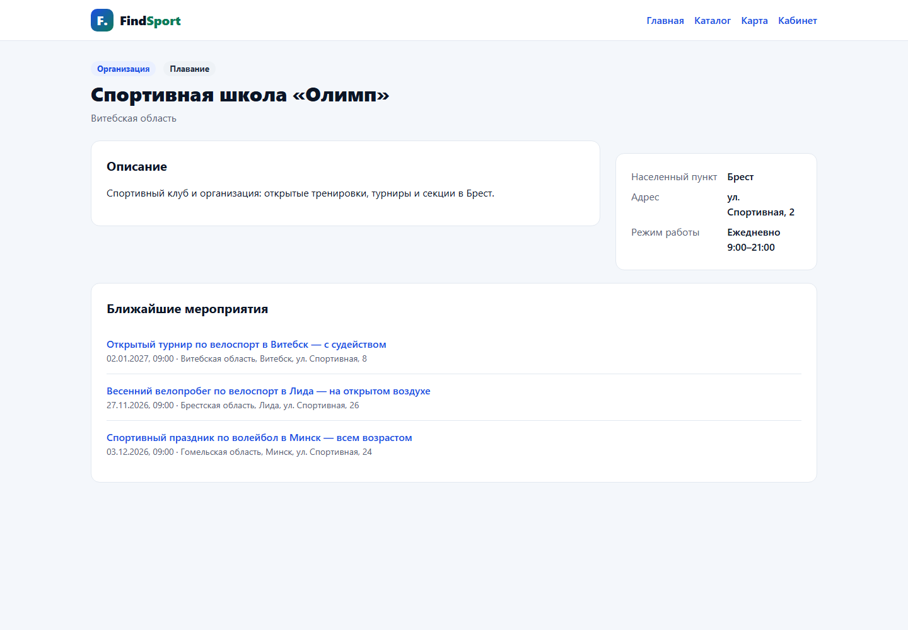
Публичная карточка поставщика. Открывается из каталога: описание, виды спорта,
адрес и собственные мероприятия поставщика.